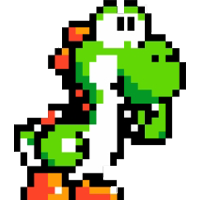
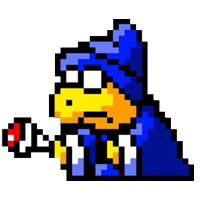
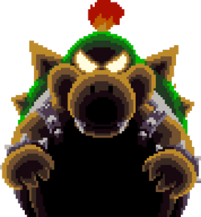
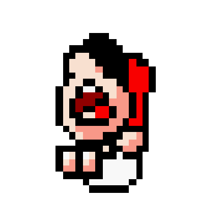

Yoshilia consegue resgatar Baby Marisilia.
Porém o Magicsilia reaparece e joga um feitiço em Baby Bowsilia tornando-o Gigante.
Para Yoshilia sair do castelo, terá que derrota-lo.
Oque Yoshilia faz?
1 - Atirar ovo
2 - Pular
3 - Dar cabeçada